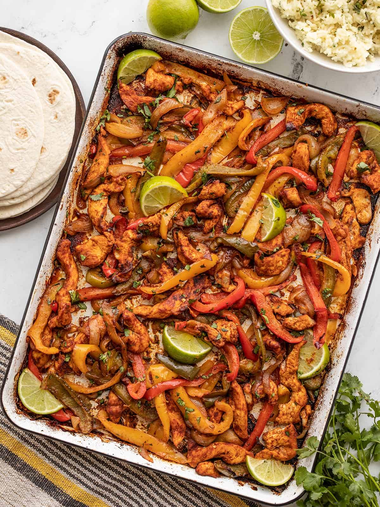

Chicken Fajitas

Delicious and easy chicken fajitas. Serve with preferred toppings such as black beans, cheese, guacamole, sour cream, rice, salsa, etc
Ingredients
- 1 tablespoon vegetable oil, or more as needed
- 1 onion, cut into strips
- 1 bell pepper, cut into strips, or more to taste
- 2 skinless, boneless chicken breast halves, cut into strips
- ¼ cup water, or more to taste
- 2 tablespoons taco seasoning mix, or more to taste
- 8 (6 inch) flour tortillas
Steps
- Heat 1 tablespoon oil in a skillet over medium heat; stir in onion and bell pepper. Cook and stir until the onion has softened and turned translucent, about 5 minutes. Remove vegetables to a plate.
- Add chicken to the skillet, adding more oil if needed. Saute until chicken is no longer pink and the juices run clear, about 5 minutes.
- Add water and taco seasoning; stir until seasoning dissolves. Simmer until sauce begins to thicken and stick to chicken, and chicken is fully cooked, 3 to 5 minutes.
- Serve chicken and vegetables on tortillas.